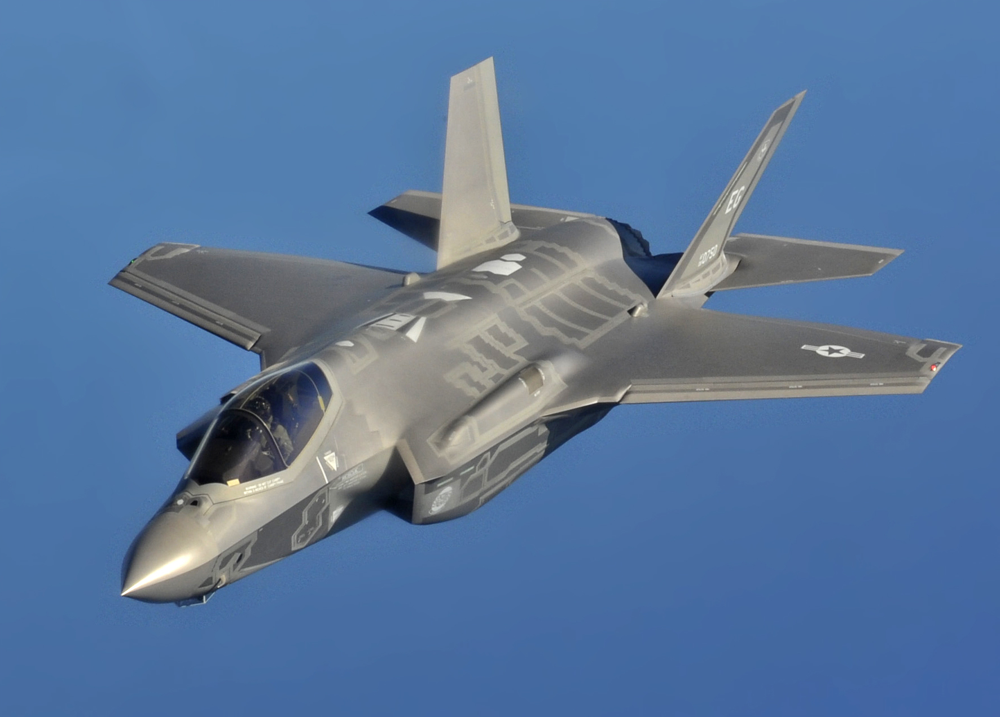
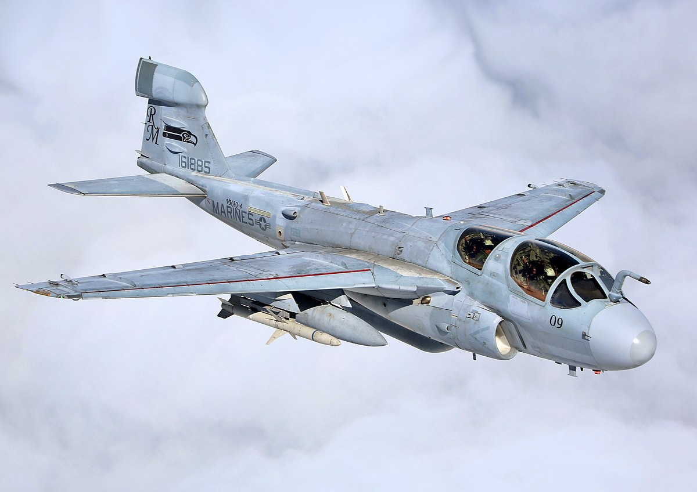
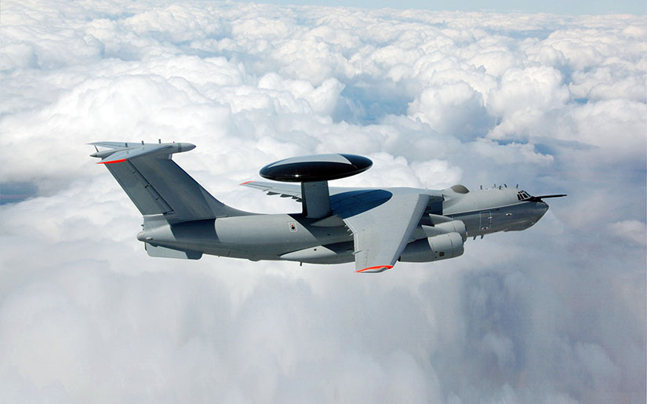
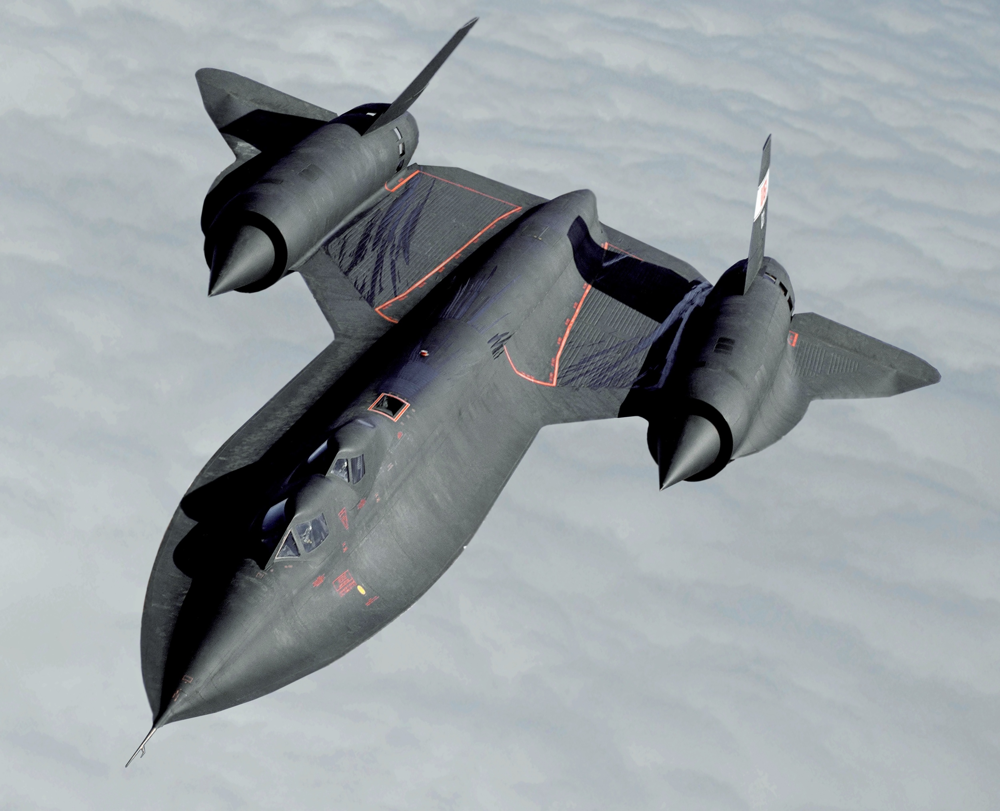
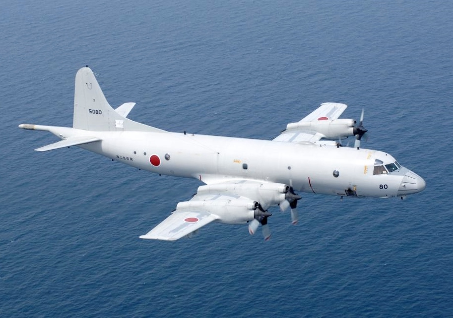
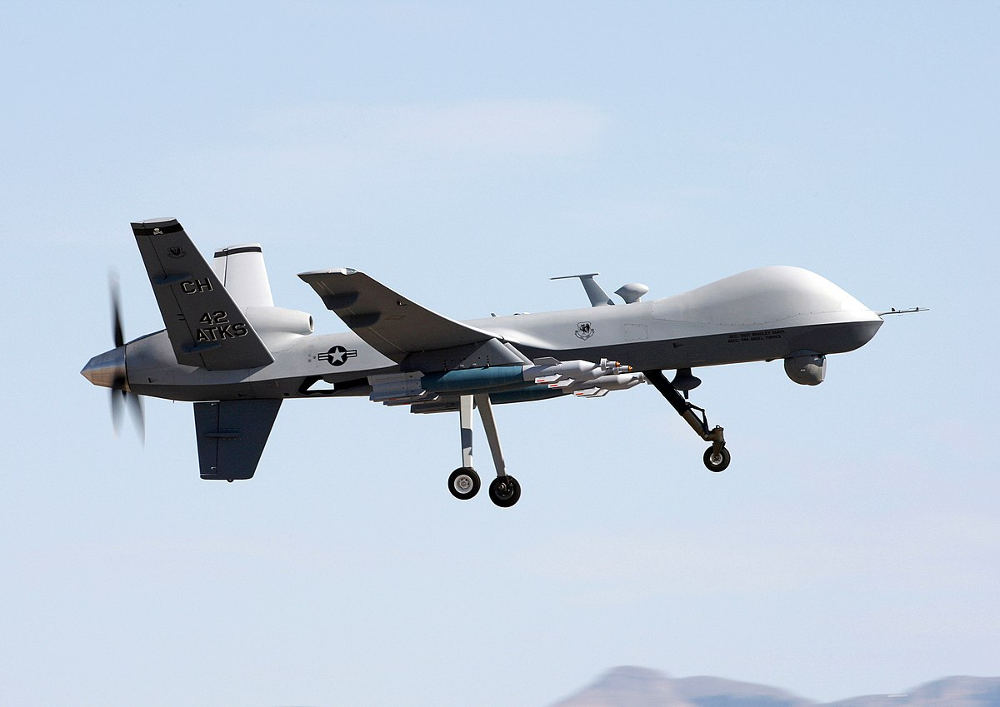

Fighters

Fighter aircraft are fixed-wing military aircraft designed primarily for air-to-air combat. In a military conflict, the role of fighter aircraft is to establish air superiority of the battlespace. Domination of the airspace above a battlefield permits bombers and attack aircraft to engage in the tactical and strategic bombing of enemy targets
Bombers

A bomber is a military combat aircraft designed to attack ground and naval targets by dropping air-to-ground weaponry (such as bombs), launching torpedoes, or deploying air-launched cruise missiles. The first use of bombs dropped from an aircraft occurred in the Italo-Turkish War, with the first major deployments coming in the First World War and Second World War by all major airforces causing devastating damage to cities, towns, and rural areas
Attackers

An attack aircraft, strike aircraft, or attack bomber is a tactical military aircraft that has a primary role of carrying out airstrikes with greater precision than bombers, and is prepared to encounter strong low-level air defenses while pressing the attack. This class of aircraft is designed mostly for close air support and naval air-to-surface missions, overlapping the tactical bomber mission. Designs dedicated to non-naval roles are often known as ground-attack aircraft.
Multirole

A multirole combat aircraft (MRCA) is a combat aircraft intended to perform different roles in combat. These roles can include air to air combat, aerial bombing, reconnaissance, electronic-warfare, and suppression of air defenses
Electronic warfare

An electronic-warfare aircraft is a military aircraft equipped for electronic warfare (EW), that is, degrading the effectiveness of enemy radar and radio systems by using radar jamming and deception methods.
AEW&C

An airborne early warning and control (AEW&C) system is an airborne radar system designed to detect aircraft, ships, vehicles, missiles, and other incoming projectiles at long ranges and perform command and control of the battlespace in an air engagement by directing fighter and attack aircraft strikes. AEW&C units are also used to carry out surveillance, including over ground targets and frequently perform BMC2 (battle management command and control
Reconnaissance

A reconnaissance aircraft (colloquially, a spy plane) is a military aircraft designed or adapted to perform aerial reconnaissance with roles including collection of imagery intelligence (including using photography), signals intelligence, as well as measurement and signature intelligence. Modern technology has also enabled some aircraft and UAVs to carry out real-time surveillance in addition to general intelligence gathering.
Maritime patrol

A maritime patrol aircraft (MPA), also known as a patrol aircraft, maritime reconnaissance aircraft, or by the older American term patrol bomber, is a fixed-wing aircraft designed to operate for long durations over water in maritime patrol roles — in particular anti-submarine warfare (ASW), anti-ship warfare (AShW), and search and rescue (SAR)
Transport

A military transport aircraft, military cargo aircraft or airlifter is a military-owned transport aircraft used to support military operations by airlifting troops and military equipment. Transport aircraft are crucial to maintaining supply lines to forward bases that are difficult to reach by ground or waterborne access, and can be used for both strategic and tactical missions. They are also often used for civilian emergency relief missions by transporting humanitarian aid.
UCAV
